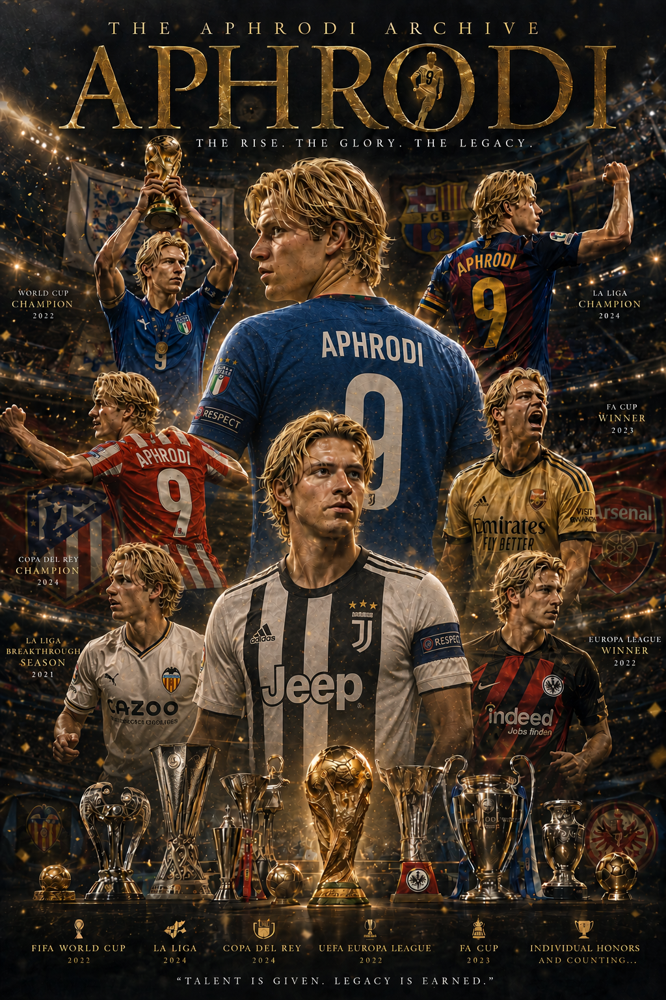

The Definitive Story
From Eindhoven to Immortality
"Điều quý giá nhất mà bóng đá ban tặng cho tôi... chưa bao giờ là cái đích đến. Nó là hành trình."
Hành Trình Của Một Huyền Thoại
Có những gã bước vào ngôi đền huyền thoại bằng sự lạnh lùng của những con số thống kê. Họ đếm danh hiệu như thể đếm tiền, tích lũy bàn thắng như những cỗ máy vô tri được lập trình sẵn.
Nhưng bóng đá không phải là một phép tính. Và Aphrodi chưa bao giờ là một cỗ máy.
Nếu lật lại cuốn sổ bám bụi của lịch sử, lướt qua những chương chói lọi nhất, người ta sẽ thấy một Aphrodi rực rỡ dưới ánh đèn nghẹt thở của Champions League, một vị thần kiêu hãnh nâng cao cúp vàng World Cup, một cái tên khiến những khán đài rực lửa phải đồng thanh nín thở. Nhưng nếu chỉ dừng lại ở đỉnh vinh quang đó, bạn sẽ mãi mãi không bao giờ chạm được vào linh hồn của một huyền thoại.
Bởi vì chương đầu tiên trong cuốn kinh thánh của cậu ấy không được viết bằng mực vàng. Nó được viết bằng máu, mồ hôi và sự hoài nghi cay đắng.
Mùa hè năm ấy, Eindhoven lạnh ngắt. Dưới bầu trời xám xịt của Hà Lan, sân Philips Stadion sừng sững như một đấu trường sẵn sàng nghiền nát những kẻ mộng mơ.
Thống Kê Ra Mắt · PSV Eindhoven
Chính từ đống tro tàn của năm trận đấu tăm tối đó, một đốm lửa bất tử đã được nhen nhóm. Vì trước khi học được cách chạm tay vào sự bất tử, Aphrodi đã phải học cách sống sót qua những ngày tháng bị người đời quay lưng.
Bóng Tối Trước Bình Minh
Mọi thiên trường ca trên đời này đều được mở đầu bằng những nốt nhạc trầm buồn, và huyền thoại mang tên Aphrodi cũng không ngoại lệ. Điểm khởi đầu của cậu chẳng có tiếng kèn Trumpet vang dội, không có những ánh đèn Flash chớp tắt liên hồi.
Lúc bấy giờ, Aphrodi chỉ là một bóng hình gầy gò, một tiền đạo trẻ đang trầy trật cào cấu từng chút cơ hội để chứng minh mình xứng đáng được tồn tại trong thế giới bóng đá chuyên nghiệp tàn nhẫn.
"Mỗi lần xỏ giày bước qua đường hầm tiến vào thảm cỏ, lồng ngực tôi lại thắt chặt bởi một câu hỏi rát bỏng: 'Mình có thực sự đủ giỏi không?'"
Cậu nhóc Aphrodi khi ấy thường ngồi bó gối nhìn chằm chằm vào bản báo cáo thành tích của chính mình. Năm trận, một bàn. Con số ấy như một cái tát thẳng thừng vào lòng kiêu hãnh, nghe chẳng giống khởi đầu của một vị thần chút nào. Nó giống như bản án tử cho một giấc mơ mộng mị.
Nhưng chính trong những đêm dài câm lặng nhìn ra ban công ngập nước mưa của thành phố Eindhoven, cậu đã ngộ ra một chân lý nghiệt ngã: Nếu cả thế giới này quay lưng và không ai thèm tin tưởng bạn, thì bạn buộc phải là người đầu tiên tự đặt cược vào chính mình.
Ở thời điểm đó, ban lãnh đạo PSV Eindhoven hoàn toàn mù tịt về việc họ đang nắm giữ một kho báu vô giá của tương lai. Nhưng định mệnh luôn có cách vận hành kỳ lạ của nó. Giữa hàng vạn đôi mắt dửng dưng trên khán đài Philips Stadion ngày hôm ấy, có một ánh nhìn rất khác — một ánh mắt sắc sảo, kiên định đến từ một tuyển trạch viên của Strasbourg.
Bước Ngoặt Định Mệnh
PSV Eindhoven ────────────► Strasbourg (Pháp)
(Nơi hoài nghi cậu) (Nơi trao cho cậu niềm tin)
"Khoảnh khắc vĩ đại nhất đời tôi là khi có một câu lạc bộ chịu nhìn vào một thằng nhóc gầy gò, ghi đúng một bàn sau năm trận, rồi chìa tay ra và bảo: 'Chúng tôi tin cậu'."
Nơi Đầu Tiên Tin Vào Cậu
Nhiều năm sau, khi Aphrodi đã ngự trị trên đỉnh cao nhất của thế giới bóng đá, giới truyền thông vẫn thường lặp lại một câu hỏi cũ kỹ: "Đâu là bước ngoặt lớn nhất trong sự nghiệp của anh?"
Câu trả lời của Aphrodi luôn là một gáo nước lạnh dội vào sự suy đoán của đám đông.
"Strasbourg."
Chỉ một từ duy nhất. Ngắn gọn, khô khốc và không chút do dự. Nơi đó không mang lại cho cậu danh hiệu lớn đầu tiên, nhưng sở hữu một thứ mà tiền bạc của các gã khổng lồ không mua được: Sự công nhận.
Tại mảnh đất ấy, cái tên Aphrodi bắt đầu được các bình luận viên gọi tên với tần suất dày hơn. Và có một thứ trong máu của cậu đã vĩnh viễn thay đổi.
Sự Chuyển Dịch Tâm Lý
"Tôi từng nghĩ mình phải chứng minh cho cả thế giới thấy tôi giỏi đến mức nào. Nhưng sau này tôi mới hiểu, người duy nhất tôi cần chứng minh... chính là bản thân tôi."
Sự Hủy Diệt Trong Một Tiếng Rắc
Nếu Strasbourg là thánh đường giúp Aphrodi học được cách tin vào chính mình, thì Eintracht Frankfurt chính là sân khấu vĩ đại nơi cậu bắt đầu ép cả châu Âu phải quỳ gối tin vào cậu.
Ở cái tuổi mà những đồng nghiệp cùng trang lứa còn đang loay hoay học cách thích nghi với áp lực, Aphrodi đã biến mình thành nỗi ác mộng khiến các trung vệ lão luyện tại Bundesliga phải thức trắng đêm nghiên cứu cách ngăn cản.
Nhưng số phận là một gã biên kịch thích trêu đùa. Chính vào lúc cuộc đời cậu đang tiến gần đến sự hoàn hảo nhất, bóng tối quyết định ra tay.
Một pha tranh chấp không có gì đặc biệt. Một bước chạy quen thuộc. Một cú tiếp đất sai một phần tư độ.
Rắc.
⚕ Chẩn Đoán Y Tế Khẩn Cấp
"Tôi sợ. Tôi không sợ những mũi dao mổ, không sợ những tháng ngày làm bạn với chiếc nạng gỗ. Tôi chỉ sợ rằng... sau khi tỉnh dậy, tôi sẽ không còn là chính mình nữa."
Và rồi đến một ngày, họ thậm chí chẳng buồn hỏi nữa. Nhưng nhát dao chí mạng thực sự không đến từ chấn thương. Nó đến từ văn phòng của ban huấn luyện — "Cậu không còn nằm trong kế hoạch của đội bóng nữa."
"Nếu ngày ấy không có cái đầu gối đứt dây chằng đó, có lẽ tôi đã trở thành một cầu thủ giỏi... Nó không lấy đi của tôi bất cứ thứ gì cả. Ngược lại... nó cho tôi tất cả."
Valencia — Nơi Tái Sinh
Người đời thường lầm tưởng rằng thử thách tàn nhẫn nhất trong bóng đá là việc leo lên đỉnh cao danh vọng. Họ đã nhầm. Điều khó khăn nhất... chính là việc phải lầm lũi bắt đầu lại từ chân núi, sau khi bản thân đã từng được chiêm ngưỡng vẻ đẹp lộng lẫy của đỉnh cao.
Valencia đơn giản chỉ trao cho cậu một cơ hội — một chiếc phao cứu sinh muộn màng. Nhưng đối với một kẻ đang chết chìm trong vũng bùn của sự ruồng rẫy, một cơ hội duy nhất chính là tất cả những gì cậu cần.
03 Trận Đầu Tiên Tại Valencia
Các trang báo thể thao tại Madrid và Catalunya đồng loạt giật những dòng tít lớn: "Huyền thoại ACL", "Kẻ trở về từ cõi chết", "Tiền đạo không biết đầu hàng".
"Tôi nghĩ về ngày gã huấn luyện viên trưởng bảo tôi không còn nằm trong kế hoạch. Và tôi nhìn xuống thảm cỏ đêm nay để nhận ra... Mình vẫn ở đây. Mình đã sống sót."
Chiến quả đầu tiên đến vào đêm mùa hè rực lửa cuối mùa giải: Cúp Nhà Vua Tây Ban Nha (Copa de España). Không đơn thuần là một chiếc cúp vô địch — đây là bằng chứng thép đầu tiên đập tan mọi hoài nghi.
"Tôi không chơi bóng để chứng minh họ sai. Tôi chơi bóng để chứng minh bản thân mình đúng."
Arsenal — Cung Điện Hay Mê Cung?
Khi gã khổng lồ thành London — Arsenal — chính thức kích hoạt bom tấn mang tên Aphrodi, cả châu Âu đều đồng loạt ngả mũ thừa nhận: Đây chính là bước ngoặt tối thượng để định đoạt số phận của một thiên tài.
Nhưng cuộc đời vốn là một kẻ lọc lừa. Không phải cánh cửa hào nhoáng nào dẫn tới cung điện cũng thực sự là lối vào chánh điện.
Cậu nhìn thấy tên mình. Xuất hiện kiêu hãnh trên bảng điện tử. Nhưng vị trí bên dưới không phải là một "Số 9" tự do bắn phá vòng cấm.
Người ta vỗ vai cậu và bảo: "Hãy chơi ở đây. Tranh chấp, điều tiết và bọc lót." Xa khỏi khung thành. Xa khỏi bản năng. Và vĩnh viễn xa rời chính bản thân mình.
Điều đau đớn nhất không phải là việc bạn thất bại hay sút hỏng một quả phạt đền. Điều đau đớn nhất là cảm giác bạn phải bất lực đứng nhìn phiên bản tốt nhất, rực rỡ nhất của bản thân bị bóp nghẹt và lụi tàn từng chút một.
"Không. Tôi chỉ hối tiếc vì đã có một quãng thời gian trong đời, tôi cam chịu để người khác định nghĩa mình là ai."
Tài năng là chưa đủ. Ý chí là chưa đủ. Ngay cả những nỗ lực kiệt cùng cũng sẽ trở nên vô nghĩa nếu bạn đặt sai chỗ. Một con người muốn chạm tay vào sự vĩ đại, bắt buộc phải được đứng ở đúng hệ sinh thái mà họ được sinh ra để tỏa sáng.
Atlético Madrid & World Cup
Ngày đầu tiên Aphrodi xuất hiện tại Madrid, bầu không khí sặc mùi hoài nghi. Giới truyền thông Madrid dạo ấy chỉ cay độc đặt ra đúng một câu hỏi duy nhất: "Liệu Aphrodi có còn là một tiền đạo thực thụ, hay chỉ là một phế binh hào nhoáng?"
Câu trả lời được Aphrodi đưa ra ngay lập tức. Khô khốc, lạnh lùng và tàn nhẫn đến mức cực đoan.
Bàn thắng. Bàn thắng. Và lại là bàn thắng.
Siêu Bão Thống Kê · Atlético Madrid
LA LIGA & EUROPA LEAGUE
Giải vô địch thế giới năm ấy ập đến như một cơn sóng thần ngoài đại dương. Toàn bộ đất nước Ý quyết định đặt cược toàn bộ vận mệnh và kỳ vọng lên bờ vai gầy của một tiền đạo đang ở đỉnh cao phong độ.
Và Aphrodi đã hiện thực hóa điều đó theo cái cách ngạo nghễ nhất. Từng trận đấu trôi qua, từng vòng knock-out sinh tử — cậu nghiền nát tất cả.
🏆 Đêm Thánh Đường Rome
Ý Vô Địch World Cup — Hat-trick Cho Aphrodi
"World Cup chưa bao giờ là sân khấu dành cho những kẻ hoàn hảo được sinh ra từ nhung lụa. Nó là thánh đường tôn vinh những kẻ biết cách bước qua đống tro tàn của chính mình."
Barcelona — Linh Hồn Khắc Vào Di Sản
Khi bản hợp đồng bom tấn mang tên Aphrodi được công bố dưới bầu trời Địa Trung Hải, dư luận chỉ nín thở chờ đợi một câu trả lời duy nhất. Barcelona là một tôn giáo, và thánh đường Camp Nou chỉ mở rộng cửa để đón nhận những kẻ sinh ra là để khắc tên mình vào lịch sử.
Thế giới bóng đá vốn đầy rẫy những gã trọc phú sẵn sàng vung tiền để mua về những cầu thủ giỏi, thậm chí là những ngôi sao thượng hạng để đánh bóng tên tuổi. Nhưng Barcelona thì khác. Họ không đơn thuần là một câu lạc bộ. Họ là một tôn giáo.
Khi Aphrodi đặt chân vào hành lang dẫn tới phòng thay đồ Camp Nou, cậu hiểu rằng mình không chỉ gia nhập một đội bóng. Cậu đang bước vào nơi từng lưu giữ linh hồn của những vị thần.
Những bức tường nơi đây không được xây bằng bê tông và thép. Chúng được xây bằng ký ức, bằng những chiến công bất tử và bằng dấu chân của các huyền thoại.
"Kẻ tầm thường chạy theo sự công nhận của đám đông. Người trẻ tuổi điên cuồng săn tìm thành công. Nhưng một bậc vĩ nhân thực thụ... họ chỉ đi tìm ý nghĩa của di sản."
Người kể chuyện vẫn nhớ như in cái ngày Aphrodi ra mắt khán giả xứ Catalunya. Thánh địa Camp Nou chật kín không còn một chỗ trống.
Tiếng hò reo của gần một trăm nghìn con người vang vọng như sóng biển. Một biển cờ đỏ xanh phủ kín từ tầng cao nhất xuống sát đường biên.
Và giữa trung tâm của cơn cuồng phong ấy, Aphrodi cảm thấy một sự bình yên đến lạ lùng.
Đó không phải vì áp lực đã biến mất. Mà bởi vì lần đầu tiên trong đời, thứ áp lực có thể bóp nghẹt bất kỳ siêu sao nào đã không còn đủ tư cách khiến cậu run sợ nữa.
Sau khi đã bước qua địa ngục ACL, sau khi đã sống sót khỏi nhà tù London và một mình gánh vác vương miện World Cup, không còn điều gì trên mặt cỏ này có thể làm lung lay ý chí của cậu.
Mùa giải đầu tiên diễn ra hoàn hảo như một cuốn kịch bản được viết sẵn. Nhưng thẳm sâu bên trong, mục đích chơi bóng của Aphrodi đã hoàn toàn tiến hóa.
Có những đêm muộn khi trận đấu đã khép lại từ lâu, Aphrodi vẫn ngồi lại trên góc cao của khán đài. Một mình. Cô độc trong bóng tối, nhìn xuống thảm cỏ xanh mướt đang mờ dần theo sương đêm.
Một người lao công già của sân vận động tình cờ bắt gặp cậu. Ông tiến lại gần và hỏi:
"Cậu đang nghĩ gì mà ngồi đây muộn thế, chàng trai?"
Aphrodi mỉm cười.
"Tôi đang cố tưởng tượng."
"Tưởng tượng điều gì?"
"Tưởng tượng về cái ngày tôi sẽ rời khỏi nơi này."
Người đàn ông già sững người.
"Nhưng cậu vừa mới đến cơ mà?"
Aphrodi nhìn xuống vòng cấm địa đang chìm trong màn sương đêm.
"Đúng vậy. Nhưng rồi ai cũng sẽ phải rời đi. Điều quan trọng duy nhất là khi chiếc ghế này trống không, người ta sẽ còn nhớ điều gì về tôi."
Đêm Muộn Tại Camp Nou
"Tôi đang cố tưởng tượng về cái ngày tôi sẽ rời khỏi nơi này."
— Aphrodi nói với người lao công già
Mùa giải tiếp theo, Barcelona bước vào đấu trường Champions League với vị thế của một kẻ hủy diệt. Cho đến đêm tứ kết định mệnh — một đêm kinh hoàng mà nhiều năm sau, những người chứng kiến vẫn còn rùng mình khi nhắc lại.
Một đội hình toàn những siêu sao thượng hạng. Một tập thể được xem là ứng cử viên số một cho chiếc cúp bạc tai voi.
Không ai nghĩ rằng tòa lâu đài ấy có thể sụp đổ.
Nhưng bóng đá là một gã bạo chúa kiêu ngạo. Nó luôn tìm cách nhắc nhở con người rằng chẳng có gì là vĩnh cửu.
Thất Bại Champions League · Tứ Kết
Tiếng còi mãn cuộc vang lên. Camp Nou chìm trong sự im lặng chết chóc.
Không còn những bài thánh ca. Không còn những tiếng reo hò cuồng nhiệt. Chỉ còn tiếng bước chân nặng nề của hàng vạn con người thất vọng kéo nhau rời khỏi khán đài.
Aphrodi đứng bất động giữa vòng tròn trung tâm.
Lần này cậu không khóc.
Cũng không nổi giận.
Trong đầu cậu chỉ còn một suy nghĩ duy nhất:
"Mình vẫn còn thiếu một thứ gì đó."
World Cup đã có.
La Liga đã có.
Europa League đã có.
Danh tiếng đã có.
Sự bất tử đã có.
Nhưng Champions League vẫn là khoảng trống cuối cùng trong bộ sưu tập.
"Tôi chưa bao giờ hối tiếc. Tôi chỉ biết rằng... hành trình của tôi vẫn chưa kết thúc tại đây."
Juventus — Hồi Kết Của Thiên Sử Thi
Khi Juventus chính thức gọi tên Aphrodi, đó không còn là một bản hợp đồng bóng đá thông thường nữa. Đó là hồi kết của một thiên sử thi đã được định mệnh đặt bút viết từ rất lâu trước đó.
Barcelona tìm mọi cách giữ chân cậu.
Những lời đề nghị hậu hĩnh được gửi tới liên tục.
Khán giả Camp Nou khẩn khoản mong cậu ở lại.
Ở lại đồng nghĩa với sự an toàn. Với vinh quang. Với những danh hiệu được bảo chứng.
Nhưng những chương sách vĩ đại nhất trong lịch sử chưa bao giờ được viết bởi những lựa chọn dễ dàng.
Khoảng Lặng Trước Bước Ngoặt
Đêm cuối cùng tại Barcelona, Aphrodi ngồi một mình trong căn hộ yên tĩnh.
Trên bàn là hai bức ảnh.
Cậu nhìn hai bức ảnh rất lâu.
Rồi mỉm cười.
Không cần suy nghĩ thêm.
Cậu biết chính xác nơi trái tim mình thuộc về.
Hai bức ảnh trên bàn:
→ Chiếc cúp vàng World Cup cùng đội tuyển Ý
→ Một cậu bé mặc chiếc áo sọc trắng-đen Juventus, rộng thùng thình
Tại Juventus, Aphrodi không cần phải chứng minh bất cứ điều gì với thế giới nữa. Cậu bước qua cánh cửa của Bà đầm già với tư cách của một vị vua, một huyền thoại sống. Và trong phòng thay đồ, có một gương mặt thân thuộc đang đứng chờ sẵn — em trai cậu.
Nhưng điều khiến lồng ngực cậu rung lên mạnh nhất không phải bản hợp đồng kỷ lục.
Không phải những bài báo ca ngợi.
Mà là một gương mặt quen thuộc đang chờ sẵn trong phòng thay đồ.
Em trai cậu.
Lần đầu tiên trong đời, hai anh em khoác chung màu áo, mang chung biểu tượng trên ngực và cùng theo đuổi một giấc mơ.
"Bóng đá suy cho cùng là một trò chơi của những vòng tròn định mệnh. Và Juventus chính là vòng tròn cuối cùng, hoàn hảo nhất của cuộc đời Aphrodi."
Mùa giải đầu tiên tại Turin, toàn bộ Juventus chỉ hướng về một mục tiêu duy nhất.
Champions League.
Danh hiệu duy nhất còn thiếu trong bộ sưu tập của Aphrodi.
Đó cũng là danh hiệu mà em trai cậu đã chạm tay tới trước.
Và đó là cái cớ cuối cùng để những người hoài nghi nói:
"Aphrodi vĩ đại thật đấy... nhưng anh ta chưa từng vô địch Champions League."
Trong bóng đá, chữ "nhưng" luôn là thứ nguy hiểm nhất.
Nó có thể phủ nhận mọi chiến công.
Nó có thể xóa nhòa mọi đỉnh cao.
Và vì thế chiến dịch Champions League năm ấy đã trở thành cuộc hành hương cuối cùng của riêng Aphrodi.
Rồi trận chung kết Champions League vĩ đại cũng đến. Khi bước qua đường hầm tiến vào thảm cỏ, bộ não của Aphrodi trôi ngược về quá khứ — PSV với 5 trận 1 bàn, Strasbourg, Frankfurt, Valencia, Arsenal, Madrid, Rome... Tách. Tiếng còi khai cuộc vang lên.
Chín mươi phút nghẹt thở trôi qua. Để rồi, tiếng còi mãn cuộc vang lên, đóng đinh số phận: Juventus chính thức trở thành nhà vua của châu Âu.
Bộ Sưu Tập Danh Hiệu · Toàn Sự Nghiệp
"Tôi từng ngây thơ nghĩ rằng bóng đá là câu chuyện về những chiếc cúp vô địch. Nhưng đến ngày hôm nay, tôi mới hiểu ra: Điều quý giá nhất mà bóng đá ban tặng cho tôi... chưa bao giờ là cái đích đến. Nó là hành trình."
Di Sản Cuối Cùng
Nếu bạn đang đọc những dòng này, điều đó có nghĩa là chiếc áo số 9 của tôi đã được gấp gọn gàng trong tủ kính của Allianz Stadium. Đôi giày đinh từng cùng tôi đi qua những cơn mưa tuyết ở Frankfurt, cái nắng cháy da tại Valencia, và những đêm rực lửa ở Madrid... từ hôm nay sẽ không còn mùi cỏ cháy nữa.
Người ta gọi tôi là một huyền thoại bất tử. Họ đếm 58 bàn thắng của tôi ở Madrid, họ chỉ vào hat-trick trong đêm Rome Thiên thanh, họ lóa mắt trước Quả bóng vàng tại Paris. Nhưng các bạn có biết không? Đêm nay, khi nhắm mắt lại, tôi không nhìn thấy vàng ròng hay cúp bạc.
Tôi nhìn thấy một phòng bệnh nồng nặc mùi cồn sát trùng ở Frankfurt. Tôi nhìn thấy bóng dáng mình cô độc trong căn hộ tối om ở London. Và xa hơn nữa, tôi nhìn thấy một thằng nhóc gầy gò, run rẩy bước ra từ đường hầm Philips Stadion, ghi đúng một bàn thắng sau năm trận đấu đầu tiên dưới những cái lắc đầu ngán ngẩm của người dân Eindhoven.
Bóng đá chuyên nghiệp là một cỗ máy nghiền thịt kiêu ngạo. Nó sẽ dìm bạn xuống vũng bùn khi bạn sa sút, nó sẽ phản bội bạn khi bạn chấn thương, và nó sẽ tìm cách định nghĩa bạn theo cách mà nó muốn.
Lời khuyên duy nhất, cũng là di sản lớn nhất tôi muốn để lại cho những đứa trẻ đang ôm quả bóng ngoài kia: Đừng bao giờ để thế giới này quyết định bạn là ai.
Cảm ơn Strasbourg vì cái bắt tay trong bóng tối. Cảm ơn Valencia vì đã cho tôi một chiếc phao cứu sinh. Cảm ơn Atlético vì đã cùng tôi tạo nên một siêu bão. Cảm ơn Barcelona vì một chương sách đầy kiêu hãnh. Và cảm ơn Juventus, cảm ơn em trai tôi — vì đã cùng tôi khép lại vòng tròn số phận một cách hoàn hảo nhất dưới hai màu Đen và Trắng.
Tôi rời khỏi thảm cỏ này không một chút tiếc nuối. Tôi đã đòi lại tất cả những gì số phận từng nợ mình. Tôi đã sống, đã chiến đấu, và đã trở thành bất tử theo cách của riêng tôi.
Tạm biệt trò chơi vĩ đại nhất thế giới.